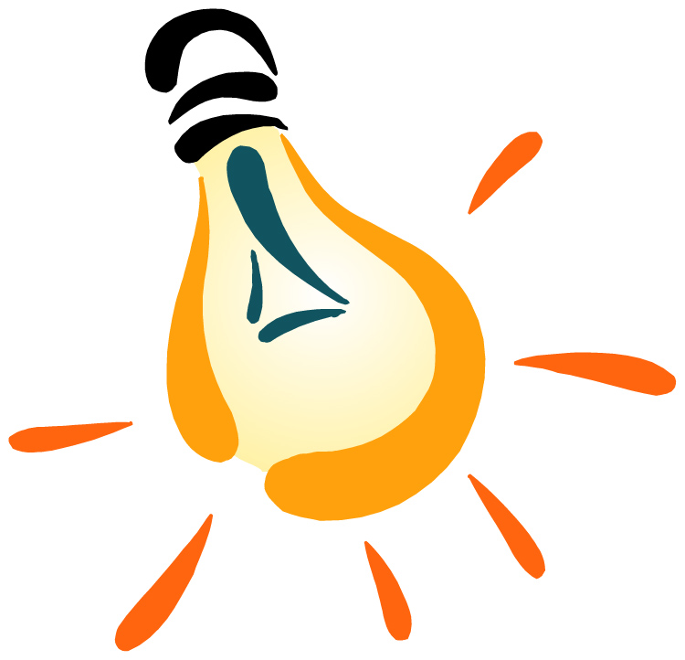

-

Development Tools
we need more technology in our company it is important that the world work in fast ways so we need more computers and applications to help us in this.
-

Creative solution
We can have a manager that plan the tasks and explain it to us, it will save time and effort for us , and for sure he should be proffesional.
-

Comany park
This park even has a personality of its own, such as "cautious" or "aggressive," to fit driving conditions.